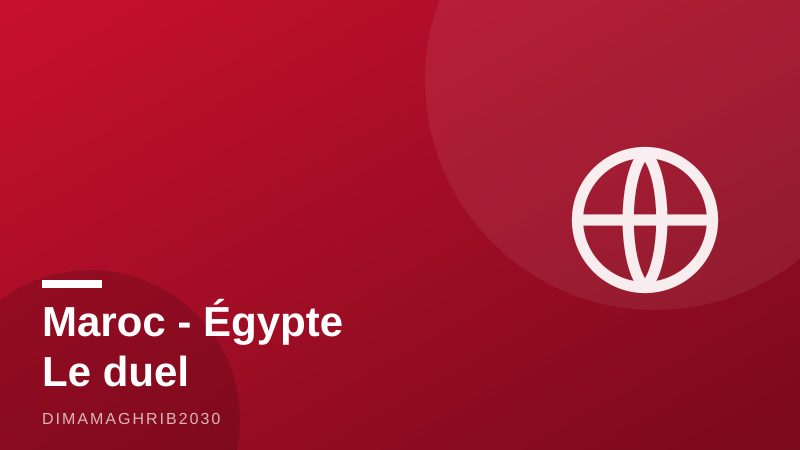

Tourisme : le Maroc garde sa couronne africaine, mais l'Égypte revient à toute vitesseMorocco Keeps Its African Tourism Crown — But Egypt Is Charging Back

Le Maroc peut encore savourer son titre de première destination africaine — mais plus pour longtemps sans se battre. À fin juin 2026, le royaume a accueilli 9,4 millions de touristes, en hausse de 6% sur un an, selon Le360 Afrique. Une performance solide, qui confirme la dynamique exceptionnelle du tourisme Maroc 2026. Sauf que derrière, l'Égypte revient à un rythme qui donne le vertige : l'avance marocaine ne tient plus qu'à un fil d'un peu plus de 400 000 visiteurs.
Le duel Maroc-Égypte tourisme est désormais la course la plus scrutée du continent. Et les chiffres du premier trimestre racontent une histoire que Rabat ne peut pas ignorer.
L'Égypte, un sprint à +43,5%
Au premier trimestre 2026, toujours selon Le360 Afrique, l'Égypte a attiré 5,6 millions de touristes, soit une envolée de 43,5% — contre 4,3 millions pour le Maroc, en progression de 7%. Autrement dit, Le Caire court quand Rabat marche vite. Plus frappant encore : les recettes. L'Égypte a engrangé 5,1 milliards de dollars sur le trimestre, quand le Maroc encaissait 31 milliards de dirhams, soit environ 3,1 milliards de dollars, en hausse de 23,5%. Presque le double pour l'Égypte, portée par ses mégaprojets touristiques et le retour massif des marchés européens et du Golfe.
Le message est clair : le classement des arrivées touristiques Maroc reste favorable au royaume, mais la bataille de la valeur — celle qui remplit les caisses — penche déjà vers le rival égyptien.
Des recettes marocaines record malgré tout
Le tableau n'est pourtant pas sombre côté marocain, loin de là. Selon Morocco World News, les recettes touristiques du royaume ont atteint 64,89 milliards de dirhams au premier semestre 2026, un bond de 15,9%. C'est un record historique, fruit d'une stratégie qui mise sur la connectivité aérienne, la montée en gamme hôtelière et l'effet d'entraînement de la Coupe du monde 2030, co-organisée avec l'Espagne et le Portugal.
Le Maroc encaisse donc plus, plus vite, avec des visiteurs qui dépensent davantage. Mais l'écart de croissance avec l'Égypte — 6% contre 43,5% — signifie qu'à ce rythme, la couronne de première destination africaine pourrait changer de tête avant la fin de la décennie, voire avant.
Un été sous haute tension
Sur le terrain, la saison estivale s'annonce brûlante. Selon Médias24 et Le360 Afrique, les réservations pointent vers un taux d'occupation hôtelière d'environ 95% à Agadir pour juillet et août, tandis que les nuitées à Marrakech progressent de 10%. Les plages du Souss affichent complet, la ville ocre tourne à plein régime, et les professionnels parlent d'un été qui pourrait pulvériser les records de 2025.
Reste la vraie question : le Maroc peut-il transformer cette avance en domination durable ? L'Égypte a l'histoire pharaonique, la mer Rouge et une capacité hôtelière en expansion fulgurante. Le Maroc a la proximité de l'Europe, une image de marque au sommet et l'horizon 2030 comme accélérateur. Le duel ne fait que commencer — et pour la première fois depuis longtemps, le tenant du titre sait qu'il est poursuivi.
Morocco can still call itself Africa's top destination in 2026 — but the title defense is getting uncomfortable. By the end of June, the kingdom had welcomed 9.4 million tourists, up 6% year on year, according to Le360 Afrique. It is a solid performance that confirms Morocco's remarkable tourism momentum. The catch: its lead over Egypt has shrunk to just over 400,000 visitors, and Cairo is sprinting.
The Morocco tourism vs Egypt rivalry has become the most closely watched race on the continent, and the first-quarter numbers tell a story Rabat cannot afford to ignore.
Egypt's 43.5% Surge
In the first quarter of 2026, Le360 Afrique reports, Egypt drew 5.6 million tourists — a staggering 43.5% jump — against Morocco's 4.3 million, up 7%. In other words, Cairo is running while Rabat is walking briskly. Even more striking is the money. Egypt banked $5.1 billion in tourism receipts over the quarter, while Morocco collected 31 billion dirhams, roughly $3.1 billion, up 23.5%. That is nearly double for Egypt, powered by mega-resort projects on the Red Sea and a roaring return of European and Gulf travelers.
The scoreboard on arrivals still favors the kingdom — the Morocco 9.4 million tourists milestone is real and hard-earned. But the battle for value, the one that fills national coffers, is already tilting toward its Egyptian rival.
Record Moroccan Receipts, All the Same
The picture is far from bleak on the Moroccan side. According to Morocco World News, the kingdom's tourism revenues reached 64.89 billion dirhams in the first half of 2026, a 15.9% leap and a historic record. It is the payoff of a strategy built on expanded air connectivity, an upmarket hotel push and the gravitational pull of the 2030 World Cup, which Morocco will co-host with Spain and Portugal.
Morocco is earning more, faster, from visitors who spend more per trip. Yet the growth gap with Egypt — 6% versus 43.5% — means that at the current pace, the crown of Africa's number one destination could change heads before the end of the decade, and possibly much sooner.
A Summer Running at Full Throttle
On the ground, the summer season is shaping up as a stress test of Morocco's capacity. According to Médias24 and Le360 Afrique, bookings point to hotel occupancy of roughly 95% in Agadir for July and August, while overnight stays in Marrakech are up 10%. The Souss beaches are effectively sold out, the ochre city is operating at full tilt, and industry professionals are talking about a summer that could shatter the records set in 2025.
The real question is whether Morocco can convert its lead into lasting dominance. Egypt has pharaonic history, the Red Sea and hotel capacity expanding at breakneck speed. Morocco has Europe on its doorstep, a brand at its peak and the 2030 horizon as an accelerator. The duel is only beginning — and for the first time in years, the defending champion knows it is being chased.